Soru 1Cevap: C
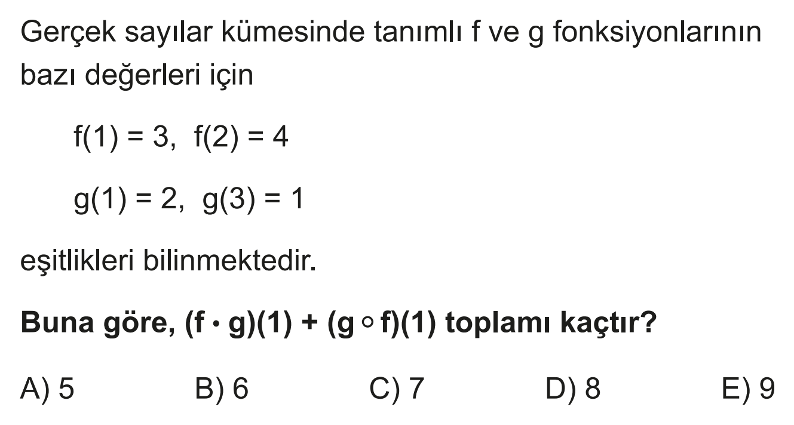
Çözüm
- $(f\cdot g)(1)=f(1)\cdot g(1)=3\cdot2=6$.
- $(g\circ f)(1)=g(f(1))=g(3)=1$.
- Toplam $7$ (C).
Cevap: C
Soru 2Cevap: A
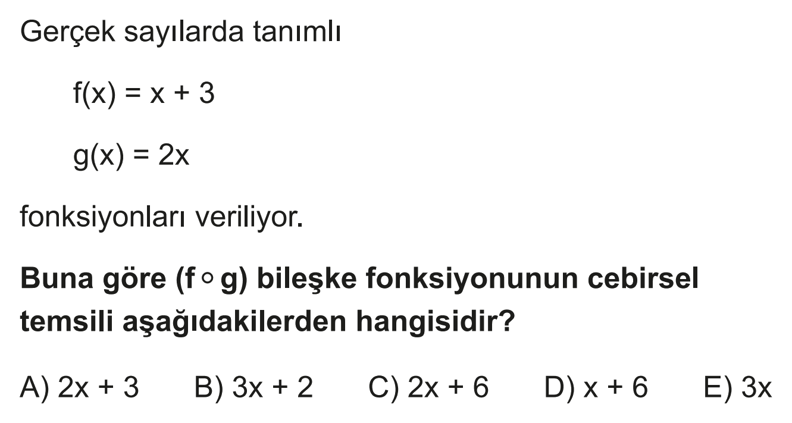
Çözüm
- $(f\circ g)(x)=f(2x)$.
- $=2x+3$.
- Cevap A.
Cevap: A
Soru 3Cevap: B
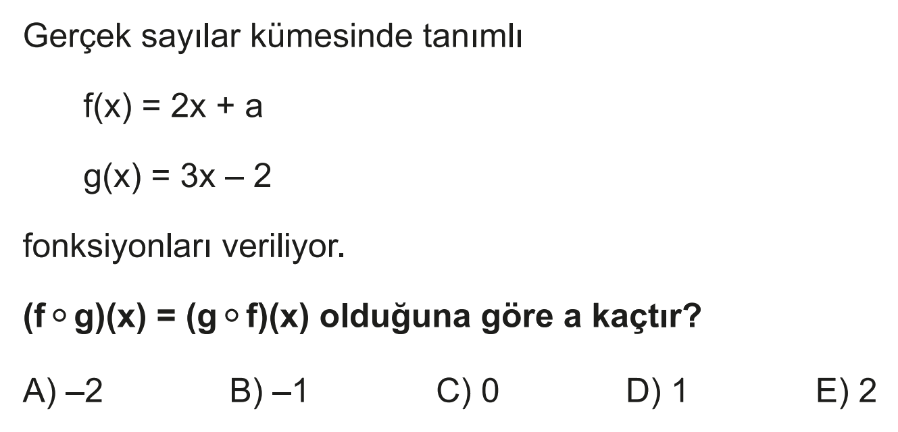
Çözüm
- $(f\circ g)(x)=2(3x-2)+a=6x-4+a$.
- $(g\circ f)(x)=3(2x+a)-2=6x+3a-2$.
- $-4+a=3a-2\Rightarrow a=-1$ (B).
Cevap: B
Soru 4Cevap: C
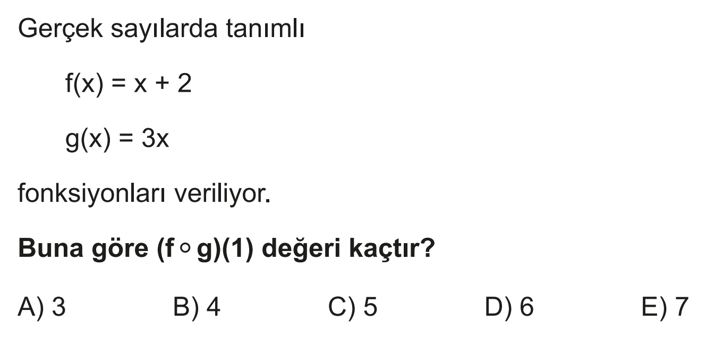
Çözüm
- $g(1)=3$.
- $f(3)=3+2$.
- $(f\circ g)(1)=5$ (C).
Cevap: C
Soru 5Cevap: A
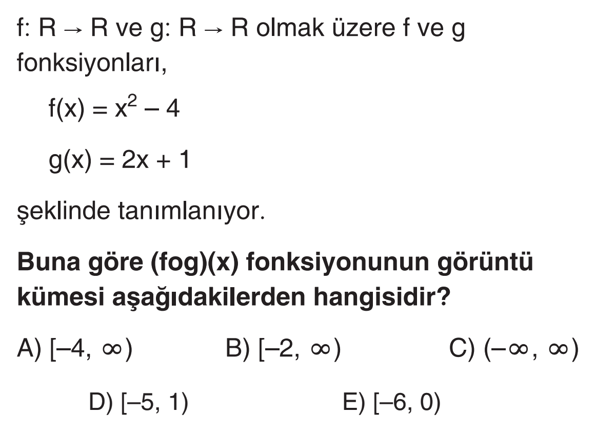
Çözüm
- $(f\circ g)(x)=(2x+1)^2-4$.
- $(2x+1)^2\ge0$ ve her negatif olmayan değeri alır.
- Görüntü kümesi $[-4,\infty)$ (A).
Cevap: A
Soru 6Cevap: B
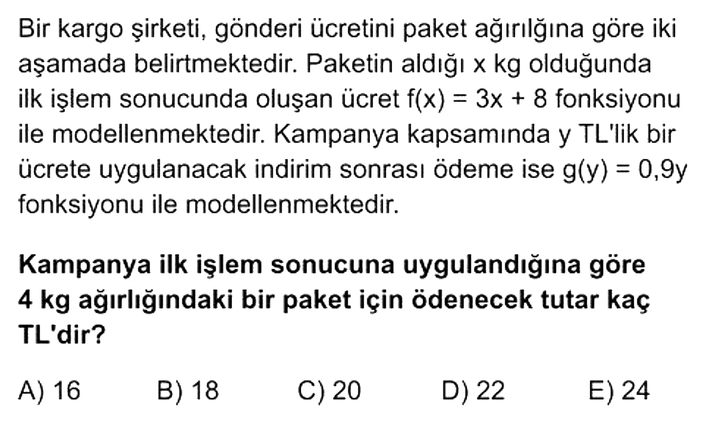
Çözüm
- $f(4)=12+8=20$.
- $g(20)=0{,}9\cdot20$.
- $18$ TL (B).
Cevap: B
Soru 7Cevap: A
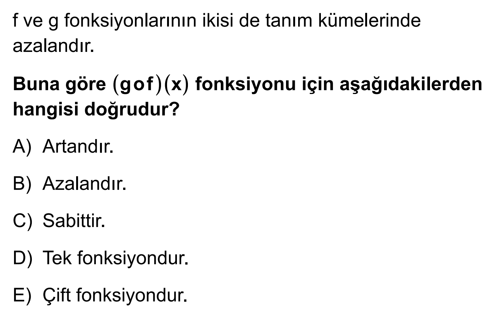
Çözüm
- $x_1\lt x_2$ ise $f(x_1)\gt f(x_2)$.
- $g$ azalan: $g(f(x_1))\lt g(f(x_2))$.
- $g\circ f$ artandır (A).
Cevap: A
Soru 8Cevap: A
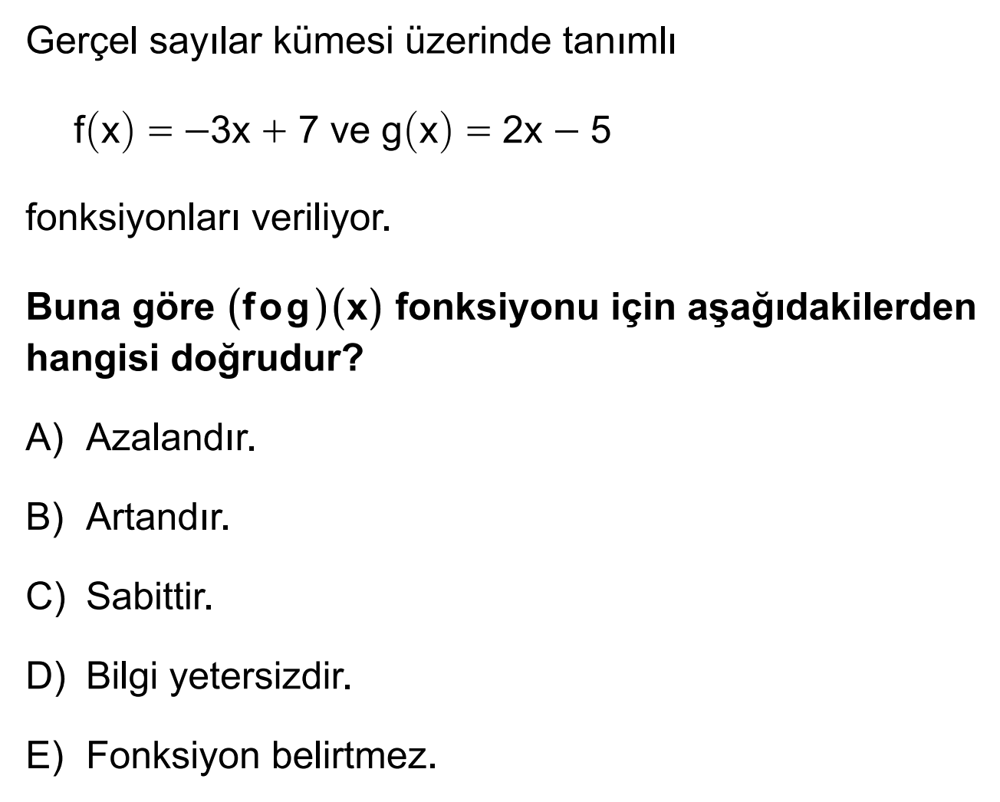
Çözüm
- $(f\circ g)(x)=-3(2x-5)+7$.
- $=-6x+22$.
- Eğim negatif: azalandır (A).
Cevap: A
Soru 9Cevap: B
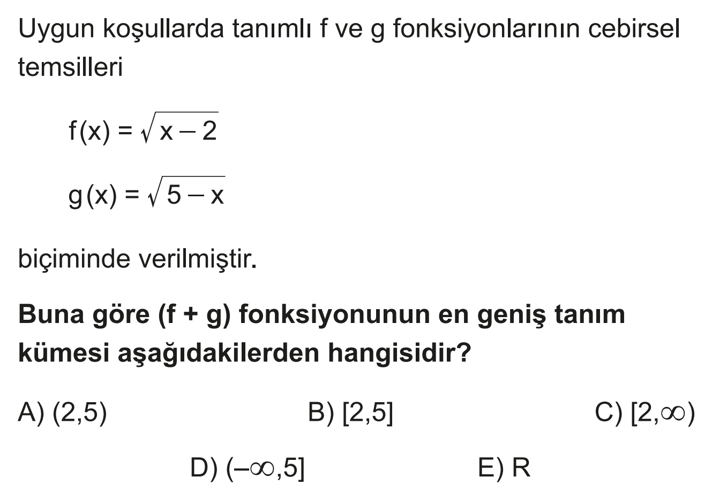
Çözüm
- $\sqrt{x-2}$ için $x\ge2$.
- $\sqrt{5-x}$ için $x\le5$.
- Kesişim $[2,5]$ (B).
Cevap: B
Soru 10Cevap: B
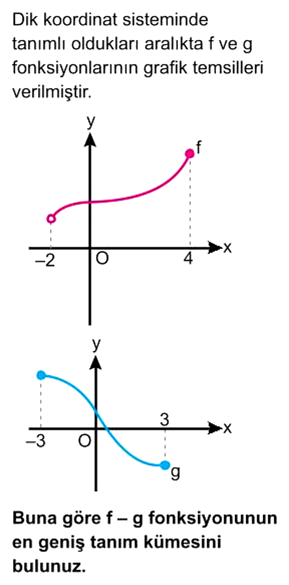
A)$[-3,4]$B)$(-2,3]$C)$[-2,3]$D)$(-2,4]$E)$[-3,3]$
Çözüm
- Grafikten $f$'nin tanım kümesi $(-2,4]$ (sol uç boş daire).
- $g$'nin tanım kümesi $[-3,3]$.
- Kesişim $(-2,3]$ (B).
Cevap: B
Soru 11Cevap: E
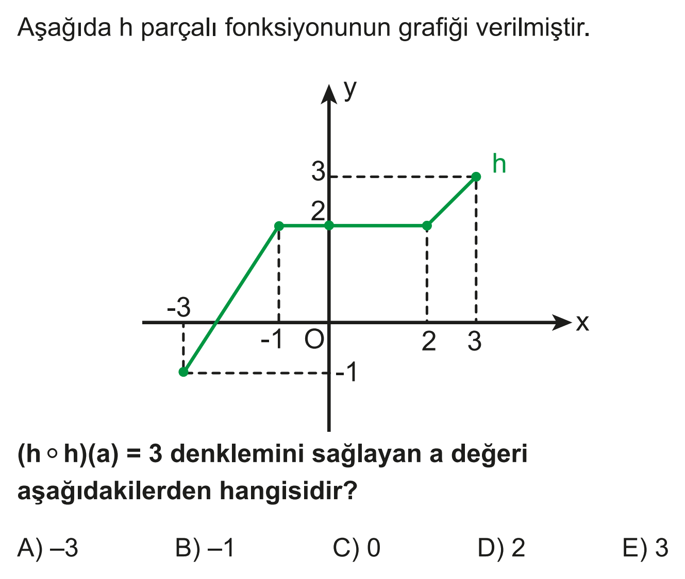
Çözüm
- $h(h(a))=3$ için $h(t)=3$ olan $t$ bulunur: grafikte yalnız $t=3$.
- Bu durumda $h(a)=3$ olmalı.
- Yine yalnız $a=3$ (E).
Cevap: E
Soru 12Cevap: D
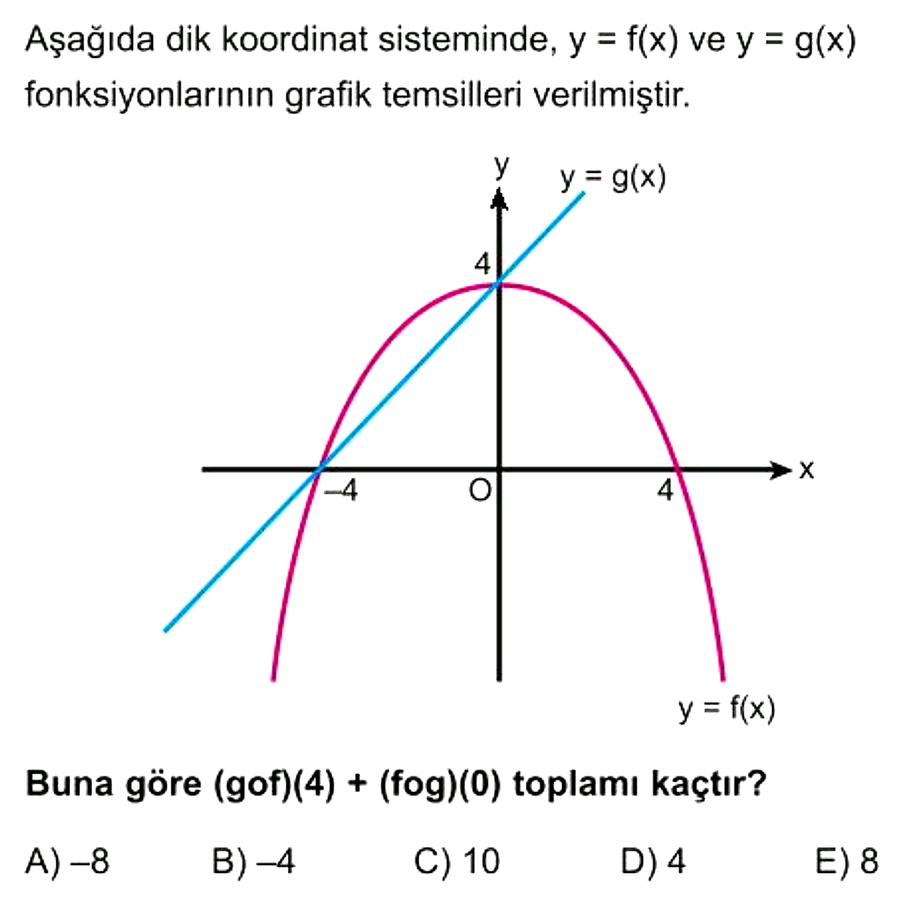
Çözüm
- $g$ doğrusu $(-4,0)$ ve $(0,4)$'ten: $g(x)=x+4$; $f$ parabolünün kökleri $\pm4$, $f(0)=4$.
- $(g\circ f)(4)=g(0)=4$.
- $(f\circ g)(0)=f(4)=0$; toplam $4$ (D).
Cevap: D
Soru 13Cevap: C
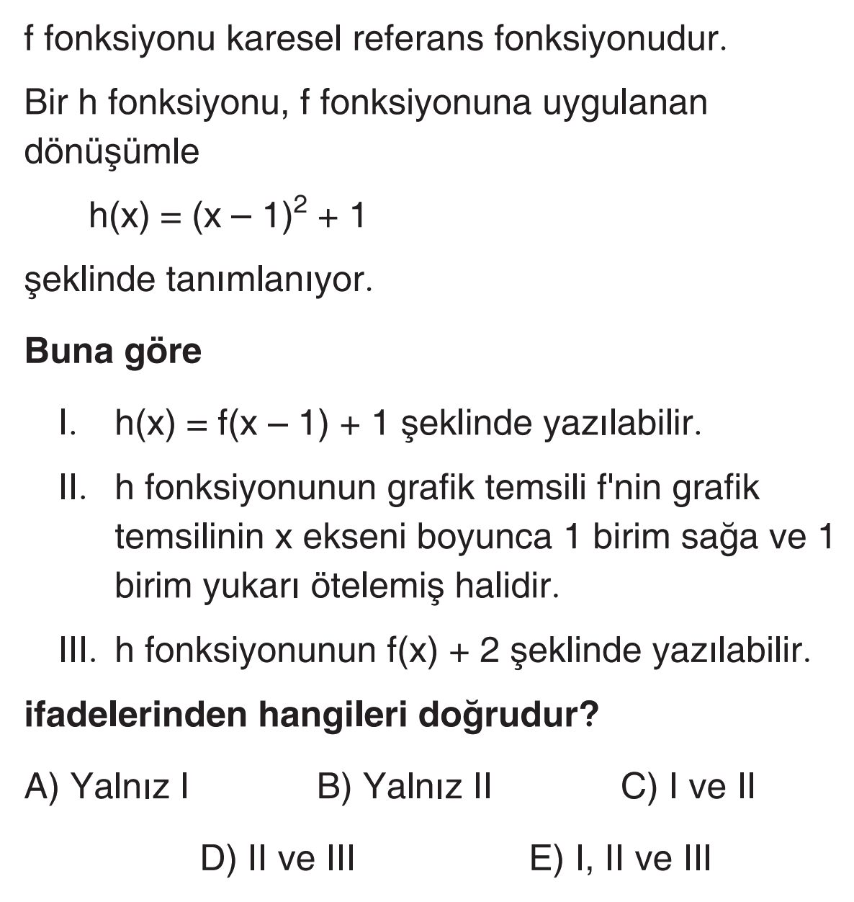
Çözüm
- $f(x)=x^2$ ise $f(x-1)+1=(x-1)^2+1=h(x)$: I doğru.
- $x-1$: $1$ birim sağa, $+1$: $1$ birim yukarı öteleme: II doğru.
- $f(x)+2=x^2+2\ne h(x)$: III yanlış. Cevap I ve II (C).
Cevap: C
Soru 14Cevap: C
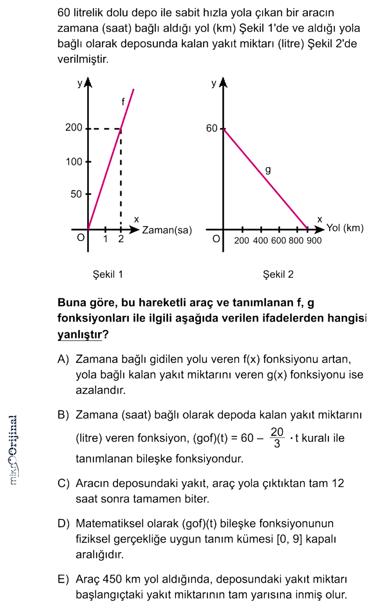
Çözüm
- Şekil 1: $f(t)=100t$; Şekil 2: $g(x)=60-\dfrac{x}{15}$.
- $(g\circ f)(t)=60-\dfrac{20}{3}t$; yakıt $t=9$'da biter.
- "12 saat sonra biter" yanlıştır (C).
Cevap: C
Soru 15Cevap: C
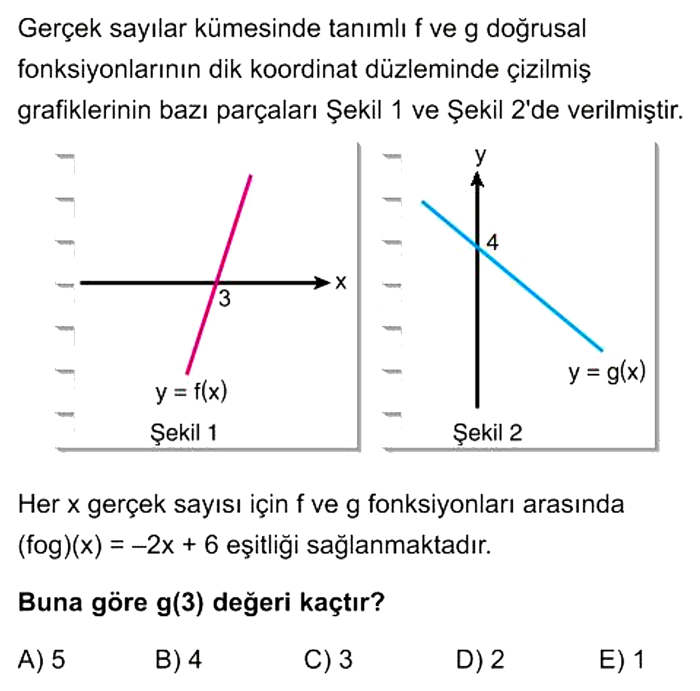
Çözüm
- Şekil 1'de $f$ doğrusu $x$ eksenini $3$'te keser: $f(3)=0$ ve $f$ bire birdir.
- $(f\circ g)(3)=-6+6=0\Rightarrow f(g(3))=0$.
- $g(3)=3$ (C).
Cevap: C
Soru 16Cevap: E
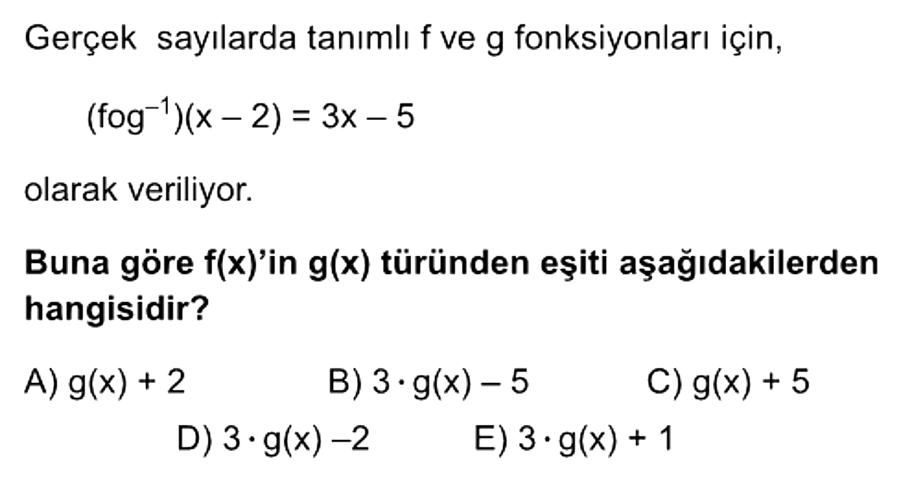
Çözüm
- $(f\circ g^{-1})(x-2)=3x-5$; $x-2=t$: $(f\circ g^{-1})(t)=3t+1$.
- $f=(f\circ g^{-1})\circ g$.
- $f(x)=3g(x)+1$ (E).
Cevap: E
Soru 17Cevap: C
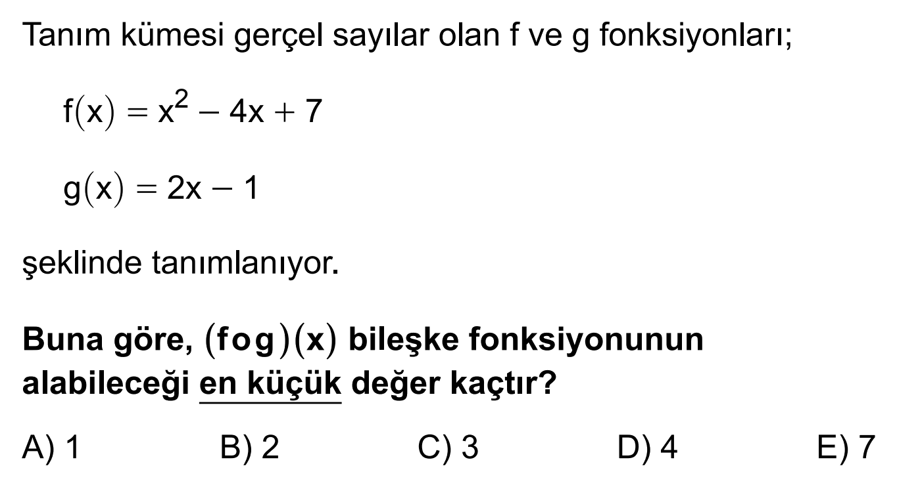
Çözüm
- $(f\circ g)(x)=(2x-1)^2-4(2x-1)+7$.
- $t=2x-1$ dersek $t^2-4t+7=(t-2)^2+3$; $t$ her gerçek değeri alır.
- En küçük değer $3$ (C).
Cevap: C
Soru 18Cevap: C
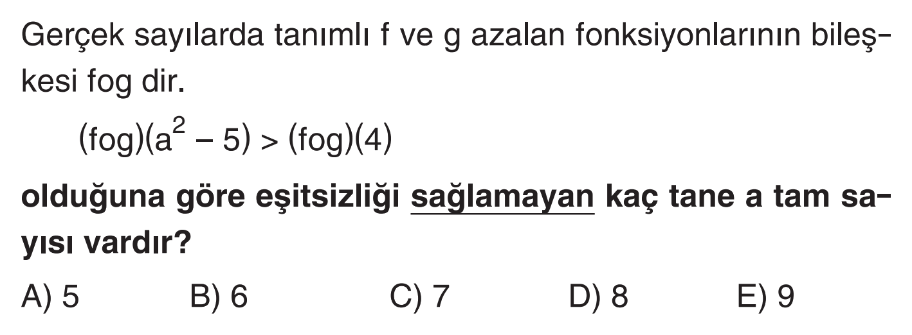
Çözüm
- Azalan∘azalan artandır: $f\circ g$ artan.
- $(f\circ g)(a^2-5)\gt(f\circ g)(4)\Rightarrow a^2-5\gt4\Rightarrow a^2\gt9$.
- Sağlamayan tam sayılar $a^2\le9$: $-3,\dots,3$; $7$ tane (C).
Cevap: C
Soru 19Cevap: C
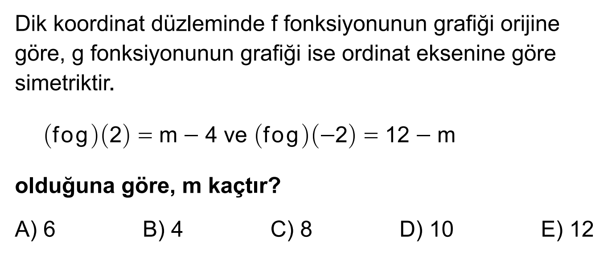
Çözüm
- $f$ orijine göre simetrik (tek), $g$ $y$ eksenine göre simetrik (çift).
- İç fonksiyon çift: $f\circ g$ çift, $(f\circ g)(2)=(f\circ g)(-2)$.
- $m-4=12-m\Rightarrow m=8$ (C).
Cevap: C
Soru 20Cevap: E
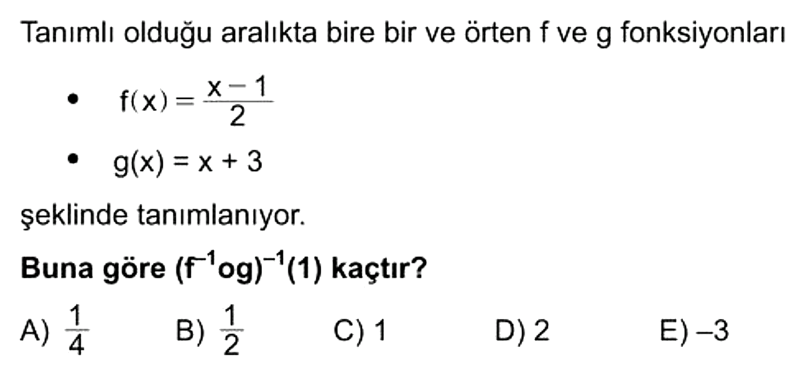
Çözüm
- $(f^{-1}\circ g)^{-1}=g^{-1}\circ f$.
- $f(1)=0$; $g^{-1}(0)$: $x+3=0\Rightarrow x=-3$.
- Sonuç $-3$ (E).
Cevap: E
Soru 21Cevap: C
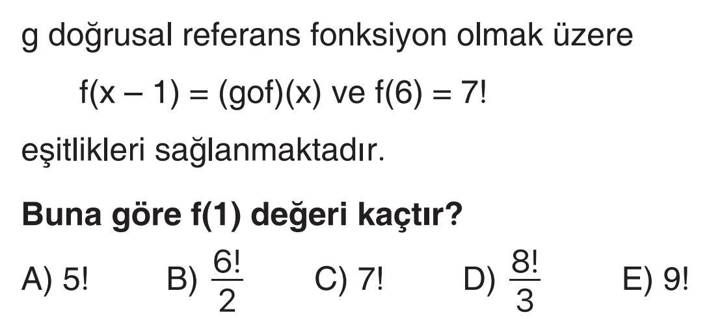
Çözüm
- $g$ doğrusal referans (birim) fonksiyon: $g(x)=x$, dolayısıyla $(g\circ f)(x)=f(x)$.
- Eşitlik $f(x-1)=f(x)$ olur: $f$'nin değerleri birer kaydırmada değişmez.
- $f(1)=f(2)=\dots=f(6)=7!$ (C).
Cevap: C
Soru 22Cevap: C
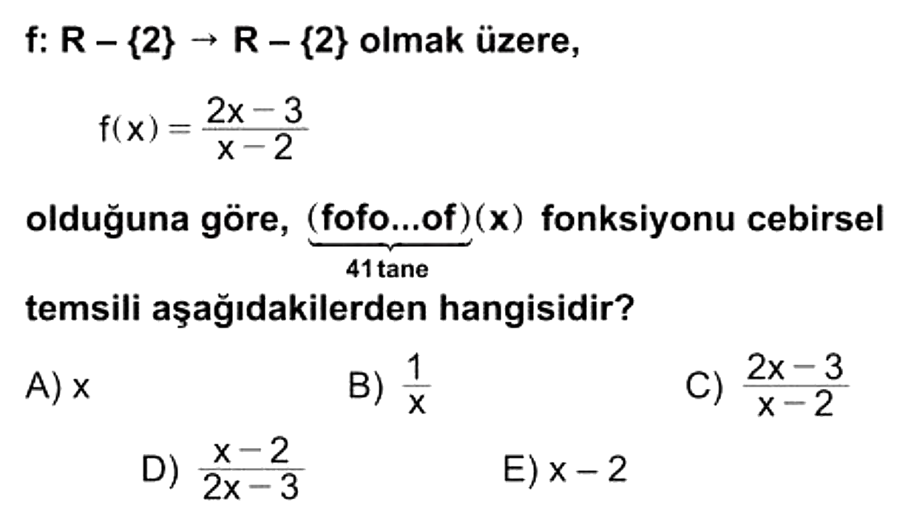
Çözüm
- $f(x)=\dfrac{2x-3}{x-2}$: pay katsayısı $2$, paydadaki sabit $-2$; $f=f^{-1}$.
- $f\circ f=I$; $41$ tek olduğundan bileşke $f$'ye eşittir.
- $\dfrac{2x-3}{x-2}$ (C).
Cevap: C
Soru 23Cevap: D
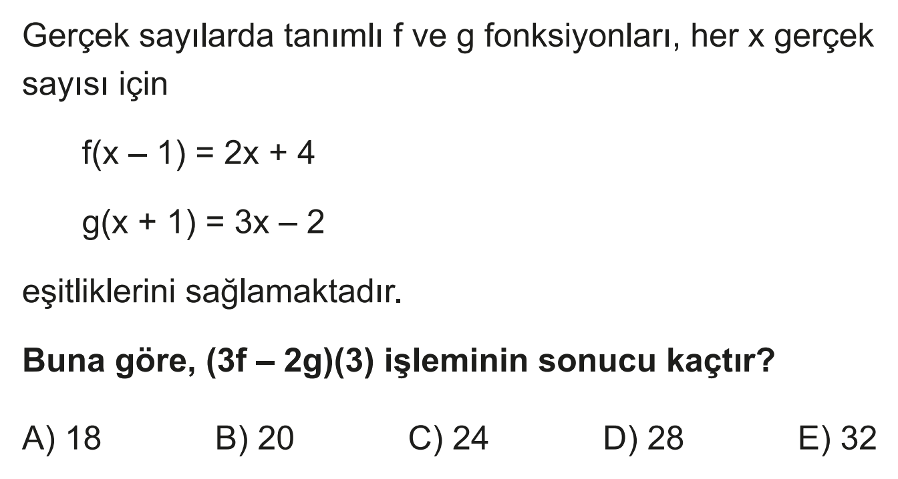
Çözüm
- $f(x-1)=2x+4\Rightarrow f(x)=2x+6$, $f(3)=12$.
- $g(x+1)=3x-2\Rightarrow g(x)=3x-5$, $g(3)=4$.
- $(3f-2g)(3)=36-8=28$ (D).
Cevap: D
Soru 24Cevap: E
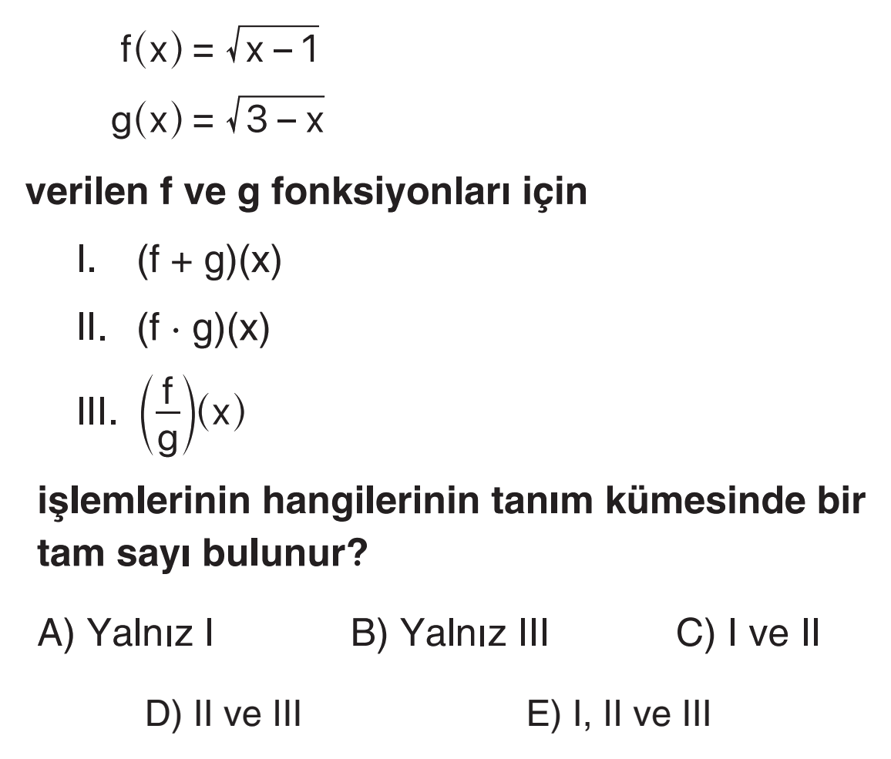
Çözüm
- $f$ için $x\ge1$, $g$ için $x\le3$: ortak küme $[1,3]$.
- $f+g$ ve $f\cdot g$: $[1,3]$; $\dfrac fg$: $[1,3)$ ($g(3)=0$).
- Hepsinde tam sayı var ($1$, $2$): I, II ve III (E).
Cevap: E
Soru 25Cevap: A
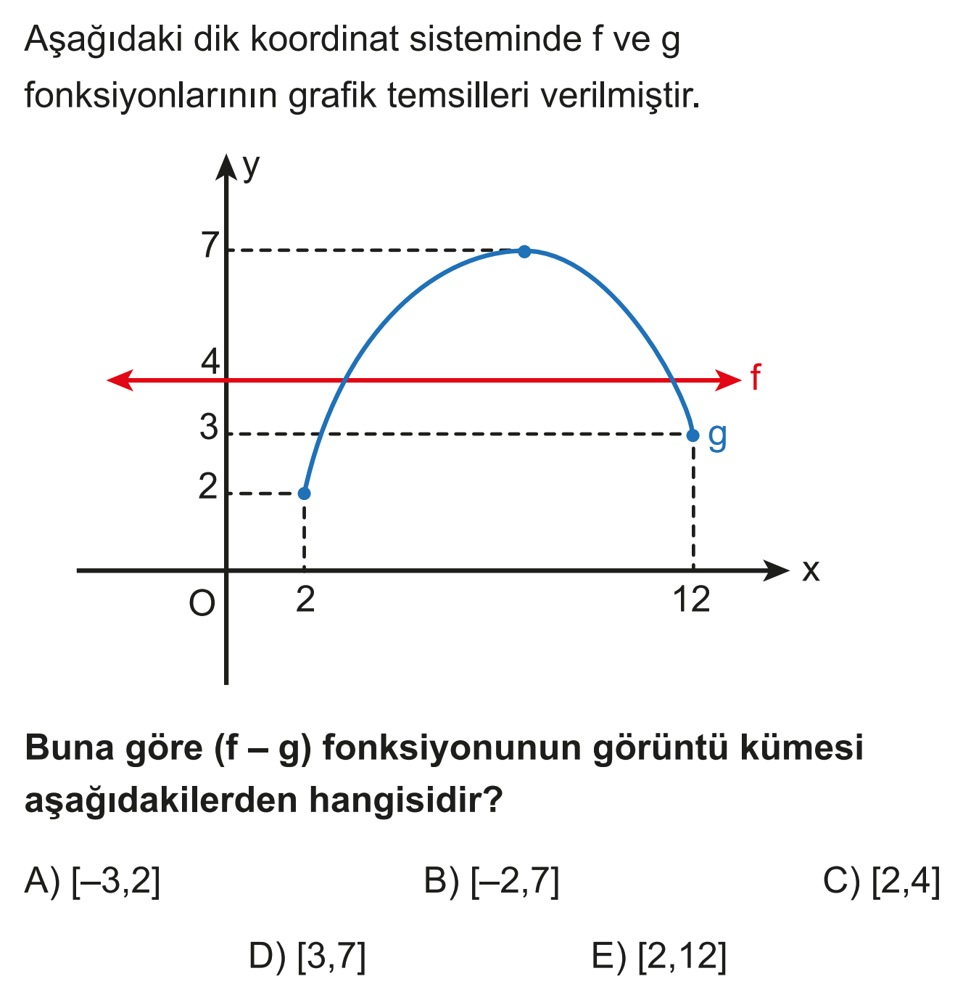
Çözüm
- Grafikte $f(x)=4$ sabit; $g$'nin görüntü kümesi $[2,7]$.
- $(f-g)(x)=4-g(x)$; $g=7$ iken $-3$, $g=2$ iken $2$.
- Görüntü kümesi $[-3,2]$ (A).
Cevap: A
Soru 26Cevap: A
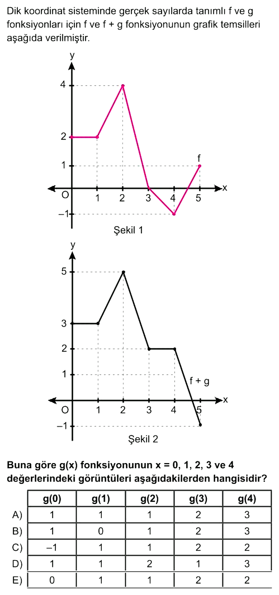
Çözüm
- $g=(f+g)-f$: $g(0)=3-2=1$, $g(1)=3-2=1$, $g(2)=5-4=1$.
- $g(3)=2-0=2$, $g(4)=2-(-1)=3$.
- Satır A: $1,1,1,2,3$.
Cevap: A
Soru 27Cevap: E
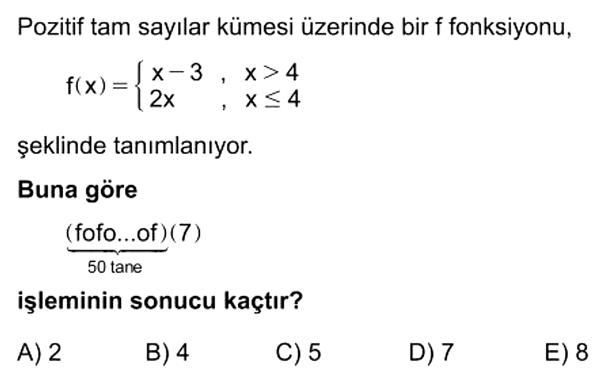
Çözüm
- $f(7)=4$, $f(4)=8$, $f(8)=5$, $f(5)=2$, $f(2)=4$: 1. adımdan sonra $4\to8\to5\to2$ döngüsü.
- $n$. adımda değer, $(n-1)$'in $4$'e bölümünden kalanla bulunur: $49=4\cdot12+1$.
- Kalan $1$: sonuç $8$ (E).
Cevap: E
Soru 28Cevap: C
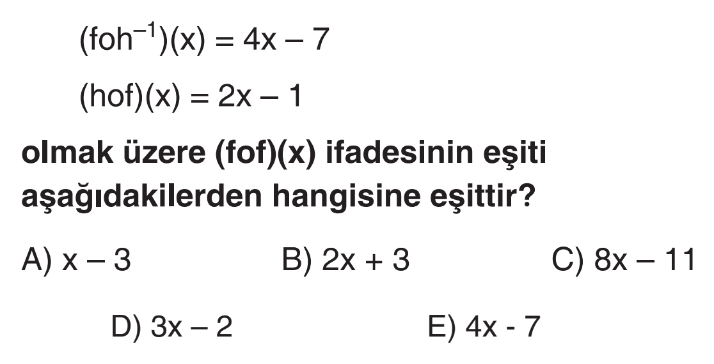
Çözüm
- $f\circ f=(f\circ h^{-1})\circ(h\circ f)$ (çünkü $h^{-1}\circ h=I$).
- $(f\circ h^{-1})(t)=4t-7$ ve $t=(h\circ f)(x)=2x-1$.
- $4(2x-1)-7=8x-11$ (C).
Cevap: C
Soru 29Cevap: D
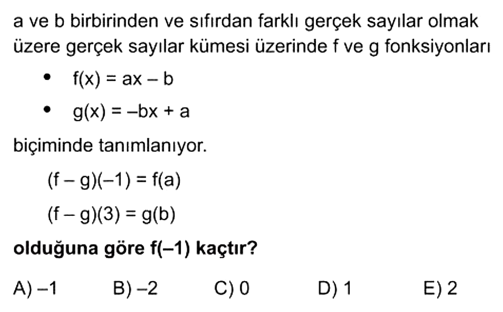
Çözüm
- $(f-g)(x)=(a+b)x-a-b$; $(f-g)(-1)=-2(a+b)=a^2-b$, $(f-g)(3)=2(a+b)=a-b^2$.
- Toplanırsa $(a-b)(a+b+1)=0$; $a\ne b$: $a+b=-1$.
- $f(-1)=-a-b=1$ (D).
Cevap: D
Soru 30Cevap: B
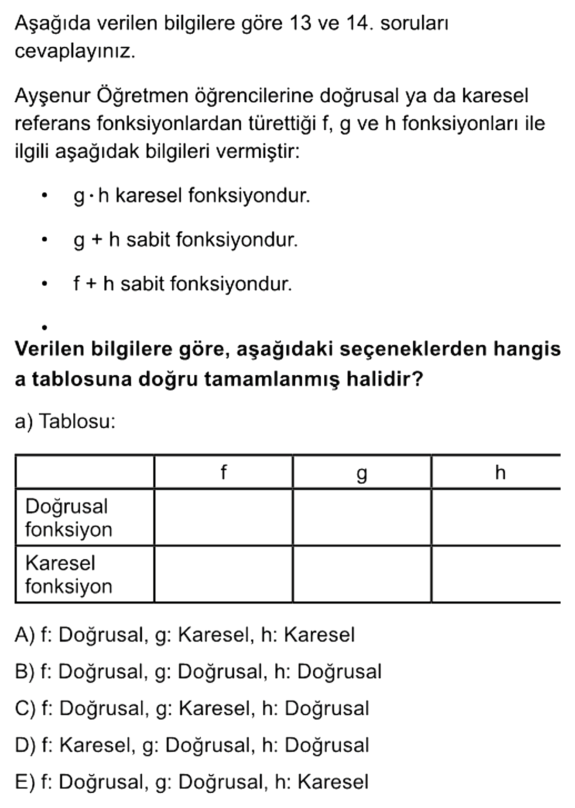
Çözüm
- $g+h$ sabit: $g$ ile $h$ aynı türden ve baş terimleri birbirini yok eder.
- $g\cdot h$ karesel: ikisi de doğrusal olmalı (karesel olsalardı çarpım 4. dereceden olurdu).
- $f+h$ sabit: $f$ de doğrusal. Cevap B.
Cevap: B